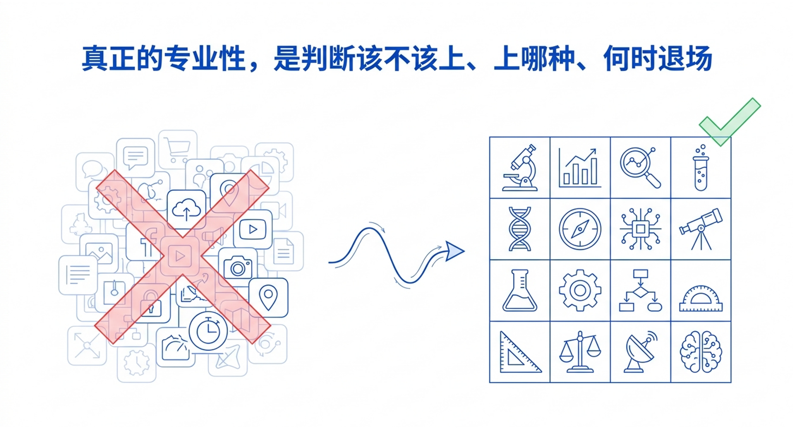
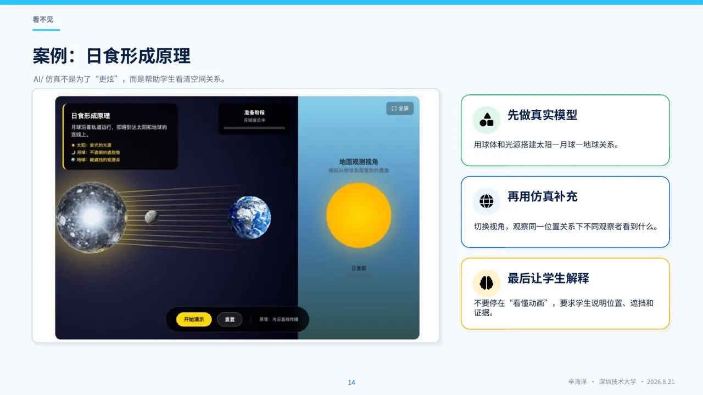
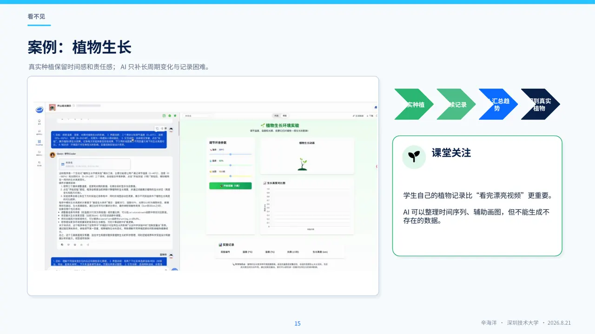
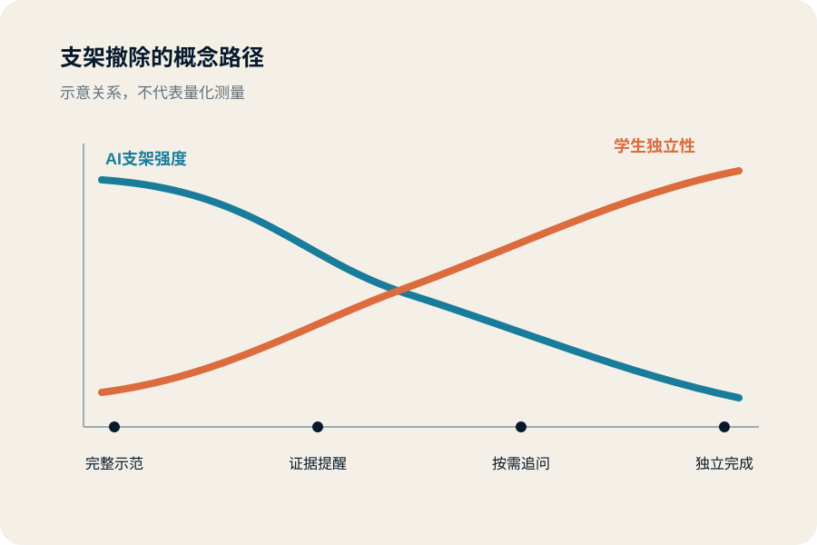
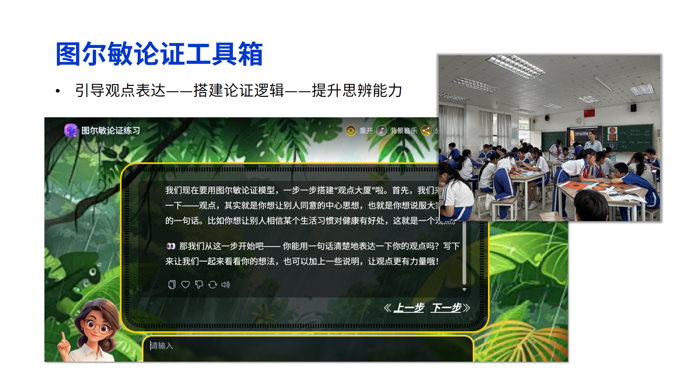

现象表征受限
过程尺度、发生速度或观察距离超出学生直接感知范围。
小学科学教师培训 · 2026
AI介入小学科学教学的条件、机制与边界
辛海洋 · 2026年8月21日 · 深圳技术大学
核心命题
教师需要判断技术介入是否必要、介入程度是否适当，以及支架能否在目标达成后撤除。

课堂问题结构
过程尺度、发生速度或观察距离超出学生直接感知范围。
时间、器材、安全与班额约束降低了实验操作和变量比较的可实施性。
课堂活动可见，但学生依据证据修订解释的过程缺乏记录。
教学基本原则
可由真实材料完成的观察与实验应保留；证据不足时不形成确定结论；安全与教学判断由教师负责。
AI系统应承担限定功能，而不应接管完整探究过程。
报告分析主干
技术是否增加了观察、比较、实验或论证机会。
问题、变量控制与证据解释是否仍由学生承担。
解释修订与迁移表现是否形成可复核的证据链。
介入、复核、数据边界与撤除条件是否明确。
必要性、适度性与可撤除性贯穿四项判断。
科学现象与认知表征
数字表征可以改变时间、空间与尺度条件；概念理解仍需通过学生解释及其证据加以判断。
日食 · 第一步
手电筒与大小球模型支持学生通过操作建立光源、遮挡物与观察者的位置关系。

日食 · 第二步
交互模拟的主要功能是支持单一变量的重复操控与比较。
课堂话语示例
月球挡住了太阳，所以发生日食。
你的模型中，观察者必须站在哪里？哪一次摆放没有出现日食？
请用模型重新摆一次，并指出你的证据。
植物生长
高度、叶片与光照记录不能由生成视频替代；具备相应处理能力的系统可辅助整理照片与定位缺失项。

方法归纳
学生应在脱离动画后依据自己的记录完成解释，并在新情境中检验概念迁移。
现象识别与证据解释属于不同层次的学习表现。
探究活动的认知责任
当问题、方案、步骤与结论主要由系统生成时，实验形式的完整性不能证明学生承担了探究思考。
探究活动的认知投入
判断重点在于学生是否承担证据比较与解释修订。
现实约束
长周期现象与重复试验受到课时限制。
器材数量和安全要求限制部分变量的操作。
大班环境增加过程记录、讨论组织与反馈分析的难度。
教学价值判断
新增可观察、可操作或可比较的学习机会
形成能够追踪预测、记录与修订的过程材料
撤除支架后仍能在相近任务中完成关键判断
核验、设备、数据与课堂组织成本处于可控范围
答案获取速度属于信息效率指标，不能单独证明探究学习质量。
食盐溶解 · 前概念与公平比较
“看不见颗粒”只是一项观察结果，不能直接推出物质消失；实验设计需要进一步明确自变量、控制条件与判定标准。
学生形成初始方案后，AI系统可辅助定位遗漏的控制条件；数据可信度仍需依据实验记录判断。
迁移任务
将自变量改为搅拌条件，由学生独立确定控制变量、判定标准与记录方法。
真实工程案例 · 两轮设计
各组记录船体尺寸与实际承载量
比较船舷高度、船底面积与承载表现
学生依据汇总数据形成第二轮方案
检查尺寸关系与计算体积
制作、加载垫圈并解释误差
AI系统承担数据整理与参数检查，设计选择、制作和实物测试仍由学生完成。
真实工程案例 · 结果范围
该轮承载量最高方案
船舷高度 3 cm船底边长 9 cm计算体积 243 cm³同一计算参数仍可能因折叠、密封、形变与加载方式产生不同表现；结论仅适用于该轮材料和测试条件。
工程概念区分
作品发生明显失稳或进水前达到的极限负载
在结构稳定、分布可控并保留一定裕度条件下采用的负载上限
极限值用于认识结构边界，安全值用于形成可执行的使用判断。
支架撤除
撤除支架后的问题提出、证据比较与解释修订构成独立表现证据。

过程性证据与形成性评价
AI系统可辅助整理课堂片段与学生记录；观念变化的解释仍需由教师依据证据作出。
证据层级与课堂观察
教学目标转化为何种问题、材料与操作要求
学生实际承担了哪些观察、比较、解释与协作
哪些记录或话语支持对学习过程的判断
教师或系统的支持如何改变后续表现
备课意图与课堂证据
预设学生比较不同方案
→课堂中主要执行教师指定步骤
→任务选择空间不足预设学生依据数据解释
→汇报集中于结果数值
→证据与主张的联系未被要求预设支架促进独立完成
→撤除提示后仍依赖固定句式
→支架尚未转化为方法差距分析用于修订任务与支架，不用于追求教学流程与预案完全一致。
最小可行数据采集
完整录制整节课不是课堂分析的必要前提。
观念变化分析
证据链与后续教学决策
能够选择数据支持主张
再次使用数据支持主张
较少回应替代解释，也未据此修订主张
现有证据支持“能够使用数据”，但不足以支持“能够处理反例并修订论证”。
安排回应替代解释的论证任务，并继续保留学生的修订稿。
证据链用于限定教学判断并生成后续任务，不用于形成稳定能力标签。
活动完成度与能力证据
ICAP与课堂话语证据
“温度高，溶得快。”
“两组盐量相同，热水组先达到看不见颗粒的标准。”
“我们搅拌速度不同，所以还不能只归因于温度。”
分析具体话语证据优于形成稳定的学生类型标签。
科学解释、科学论证与CER
提高水温会缩短食盐达到同一溶解标准的时间。
相同盐量和水量下，热水组三次用时均短于常温组。
在本次控制条件下，温度变化与溶解用时的差异一致；但仍需说明搅拌和判定标准。
专业责任边界
AI输出可作为分析线索，但不能替代教师复核与专业判断。
人机协同的课堂编排
教学设计需要规定初始表达、证据追问、系统介入与支架撤除的具体时机。
教师主导的教学循环
界定目标、学习障碍、初始证据与系统功能
保留学生初始表达，按证据需要调用支架
对照教学意图，复核课堂片段与学生作品
修订任务、材料、提问与支架撤除条件
AI系统可以支持各环节的信息处理，但不形成脱离教师的独立决策链。
AI介入时机
在学生形成初始解释之前，系统不应直接生成完整结论。
证据导向的提示框架
小学科学探究支架
分析学生实验方案并提出证据问题
不生成结论；每轮提出一个问题
围绕变量、证据与替代解释提问
学生方案：比较热水和冷水中盐的溶解。请先问我一个可能影响公平比较的问题。
课堂话语示例
01请说明已经获得的观察证据。
02请区分AI回答中的证据陈述与推测内容。
03请依据实验记录独立重述解释。
大班教学组织

概念错误处理
系统输出示例：盐在热水里会溶解得更多，所以一定也溶解得更快。
数据治理
教学决策检查
无法说明教学必要性与撤除条件时，不宜引入AI系统。
教学设计工作坊
一张图、一段视频或一组可比较材料
一个可操作变量的模拟或H5原型
限定为证据追问且不生成结论的智能体
迁移与独立表现
教学试验应聚焦一节课中的一个明确问题，并保存介入前后的学生作品。
独立观察、证据比较与解释表达构成支架效果的检验依据。
附录 A1
参与方式随任务变化，不构成稳定的学生等级。
附录 A2
该分类不是线性教学步骤，也不要求单节课完整覆盖。
附录 A4
平台更新不改变教学功能分类的分析价值。
附录 A5
示例、试点与正式研究应明确区分。
附录 A6
一页记录应明确问题、功能、责任边界与评价证据。